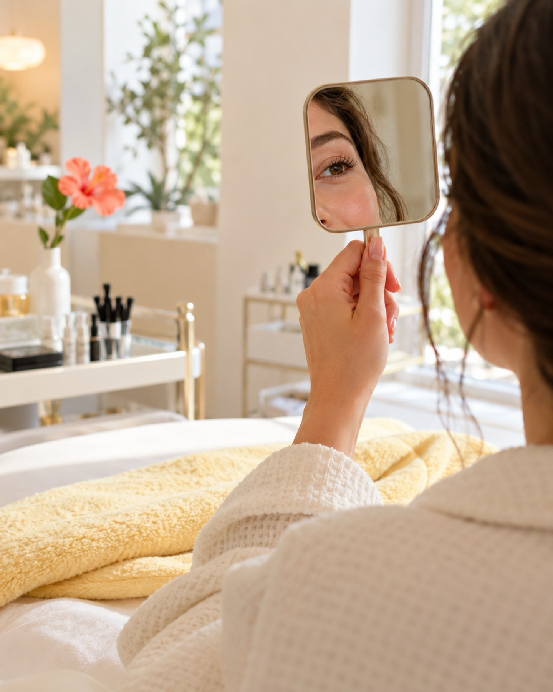

Dein Blick, nur wacher.
Lashlifting, Brauen und Gesichtspflege in Berlin-Tempelhof. Eine WhatsApp genügt für den Termin.
Termin per WhatsAppLeistungen

Aqua Facial / HydraFacial
Reinigen, sanft peelen, Feuchtigkeit geben, alles in einem Termin. Die Haut wirkt danach frischer.

Wimpernlifting
Ihre eigenen Wimpern werden geschwungen und gefärbt. Der Blick wirkt offener. Verlängert wird nichts.

Browlifting / Brow Lamination
Die Brauenhaare werden in Form gebracht und fixiert. So liegt die Linie gleichmäßig und gepflegt.
-
Mikrodermabrasion
Ein mechanisches Peeling trägt abgestorbene Hautschüppchen ab. Das Hautbild wird glatter.

Bodyforming / Körperbehandlungen
Körperbehandlungen, Bodyforming eingeschlossen. Was passt, besprechen wir vorher mit Ihnen.
-
Individuelle Gesichtsbehandlungen
Wir richten uns nach Ihrer Haut und Ihren Wünschen. Erst sprechen, dann entscheiden.
Über das Studio
Beauty Lone ist ein kleines Studio in der Attilastraße 177 in Tempelhof.
Bevor wir anfangen, reden wir in Ruhe über Ihre Wünsche. Entschieden wird zu zweit.
Wimpern, Brauen, Gesichtspflege: Wir verändern nicht mehr als nötig.
Ablauf Ihres Termins
- 1/3
Nachricht schreiben
Schreiben Sie uns per WhatsApp, was Sie interessiert.
- 2/3
Beratung vor Ort
Wir sprechen über Ihre Wünsche, dann legen wir los.
- 3/3
Behandlung und Pflegetipps
Zum Schluss: Tipps für die Pflege zu Hause.
Ergebnisse

Beispielbilder · mehr auf @beauty_lonee
Bewertungen
4,6 ★ · 59 Google-Bewertungen
„Ich wurde vorher richtig gut beraten und habe mich die ganze Zeit wohlgefühlt.“
Sabine K.
„Meine Brauen sehen endlich ordentlich aus und trotzdem natürlich.“
Melanie T.
Häufige Fragen
Wie bereite ich mich vor?
Kommen Sie am besten ungeschminkt. Bei Fragen zu Ihrer Haut oder Allergien sagen Sie uns bitte vorab Bescheid.
Wie lange dauert eine Behandlung?
Das hängt von der Behandlung ab. Die ungefähre Dauer nennen wir Ihnen bei der Terminvereinbarung.
Was muss ich nach der Behandlung beachten?
Pflegetipps bekommen Sie nach jeder Behandlung mit. Für Wimpern und Brauen heißt das meist: in den ersten Stunden Wasser und Reiben vermeiden.
Was gilt, wenn ich absagen muss?
Bitte schreiben Sie uns so früh wie möglich per WhatsApp, damit wir den Termin neu vergeben können.